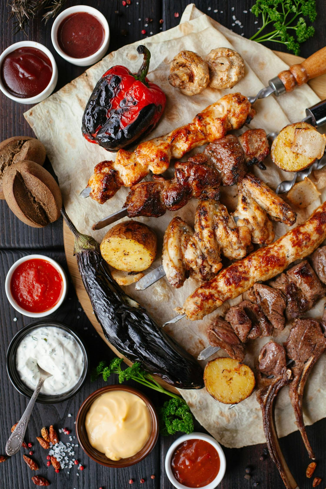
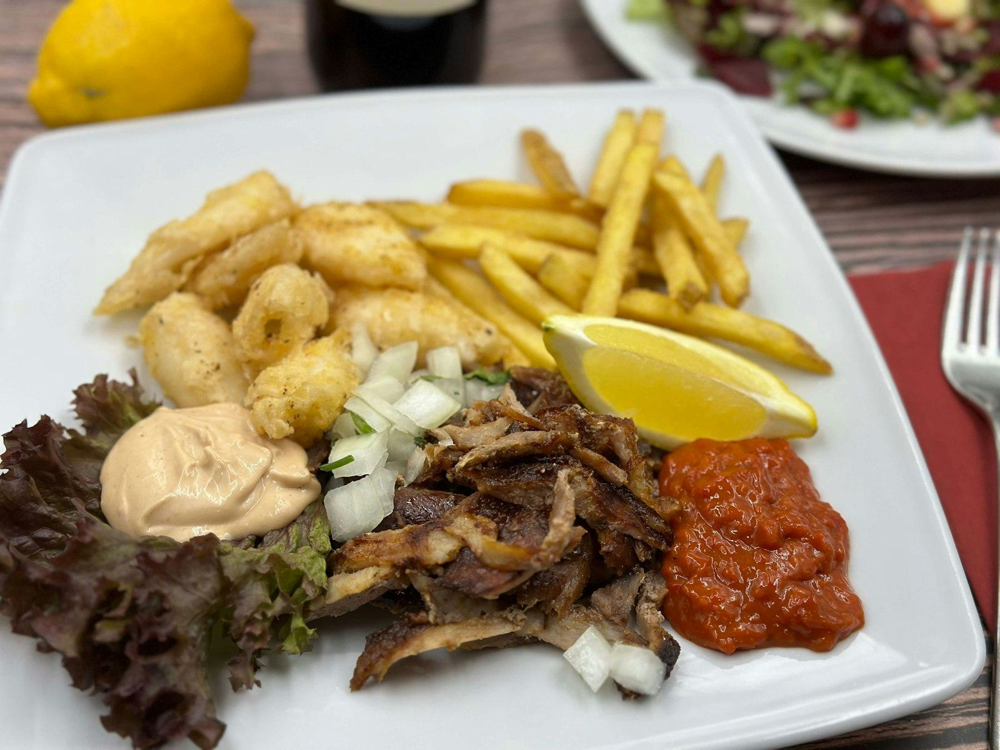

Blanc de Sable
29,95Droog en verfrissend, gemaakt van Xinomavro: fijne bubbels, frisse fruittonen en een droge afdronk.

Griekse Taverna
Griekse keuken aan de Kerkstraat in Roosendaal. Van gyros en souvlaki tot stifado uit de oven, met een Griekse wijn erbij.
Dinsdag t/m zondag open vanaf 16:30
Ook bestellen gaat telefonisch: noem gewoon het nummer van het gerecht.



Van een Griekse koffie of frappé tot ouzo, metaxa en wijnen uit heel Griekenland. Prijzen in euro.
| Huiswijn | glas | ½ liter | fles |
|---|---|---|---|
| Droog wit / rood | 5,50 | 14,50 | 25,95 |
| Imiglikos wit / rood | 5,80 | 15,50 | 26,95 |
| Samos | 5,95 | 16,95 | 26,50 |
| Mavrodaphne | 5,95 | 16,95 | 26,50 |
| Retsina | 5,50 | 14,95 | 26,00 |
| Rosé | 5,50 | 14,95 | 26,00 |
| Chardonnay | 6,50 | – | 27,95 |
| Sauvignon Blanc | 6,50 | – | 27,95 |
| Merlot | 6,50 | – | 27,95 |
| Cabernet Sauvignon | 6,50 | – | 27,95 |
Droog en verfrissend, gemaakt van Xinomavro: fijne bubbels, frisse fruittonen en een droge afdronk.
Zalmroze, met aroma’s van aardbei, framboos, mandarijn en witte kers. Fris, sappig en knapperig.
Uit Nemea: granaatappel en wilde rode bessen, voller van stijl. Mooi bij witte kazen en lichtzoete gerechten.
Meloen, abrikoos en citrus met tonen van honing en witte bloemen. Mooi bij gelaagde gerechten.
Witte perzik, citrus en passievrucht met een minerale ondertoon. Uitstekend bij vis en schaaldieren.
Florale tonen en frisse citrus, hints van roze grapefruit en basilicum. Bij visgerechten en licht vlees.
Ananas, meloen en citrus met kruidige tonen. Krachtig maar fris, met een lange minerale afdronk.
Soepel en toegankelijk: rood en donker fruit met tonen van kaneel en kruidnagel.
Diep paarsrood, rijpe bramen en subtiele kruidigheid. Elegant, met structuur en frisheid.
Rijk en expressief: kersen, pruimen, truffel, koffie en chocolade. Ideaal bij stevige gerechten.
Een zeldzame Griekse druif: rood fruit, frisse zuren en fluweelzachte tannines.
Kalí órexi! Eet smakelijk.

De oude Grieken waren het die als eersten in Europa min of meer geciviliseerde gerechten op tafel zetten. Zo verhaalt ook de Odyssee, het Griekse epos over de omzwervingen van Odysseus uit 700 voor Christus, nauwgezet over eet- en drankfestijnen met talloze gangen, gebakken broden, zoete taartjes en geroosterde vlees- en visgerechten.
Tonijn, zeebaars, garnalen en zee-egels waren toen al dure lekkernijen uit zee, oesters vormden maagvulling voor de gewone man.
We hebben genoten. Het eten was super en de bediening top. Onze kinderen vonden het ook erg leuk.
Geweldige taverna. Heel erg gezellig en mooi ingericht. Het eten was heerlijk!
Vriendelijke bediening maar vooral heerlijk gegeten samen met de kids. Zeker een aanrader.
Bel ons om een tafel te reserveren of om te bestellen.
Kerkstraat 2
4701 HT Roosendaal